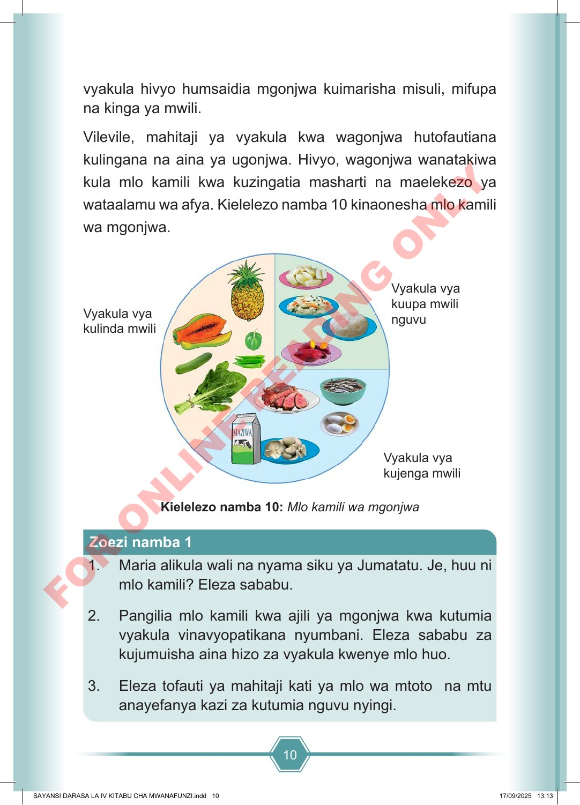

10 vyakula hivyo humsaidia mgonjwa kuimarisha misuli, mifupa na kinga ya mwili. Vilevile, mahitaji ya vyakula kwa wagonjwa hutofautiana kulingana na aina ya ugonjwa. Hivyo, wagonjwa wanatakiwa kula mlo kamili kwa kuzingatia masharti na maelekezo ya wataalamu wa afya. Kielelezo namba 10 kinaonesha mlo kamili wa mgonjwa. Vyakula vya kujenga mwili Vyakula vya kulinda mwili Vyakula vya kuupa mwili nguvu Kielelezo namba 10: Mlo kamili wa mgonjwa 1. Maria alikula wali na nyama siku ya Jumatatu. Je, huu ni mlo kamili? Eleza sababu. 2. Pangilia mlo kamili kwa ajili ya mgonjwa kwa kutumia vyakula vinavyopatikana nyumbani. Eleza sababu za kujumuisha aina hizo za vyakula kwenye mlo huo. 3. Eleza tofauti ya mahitaji kati ya mlo wa mtoto na mtu anayefanya kazi za kutumia nguvu nyingi. Zoezi namba 1 SAYANSI DARASA LA IV KITABU CHA MWANAFUNZI.indd 10 SAYANSI DARASA LA IV KITABU CHA MWANAFUNZI.indd 10 17/09/2025 13:13 17/09/2025 13:13 F O R O N L I N E R E A D I N G O N L Y